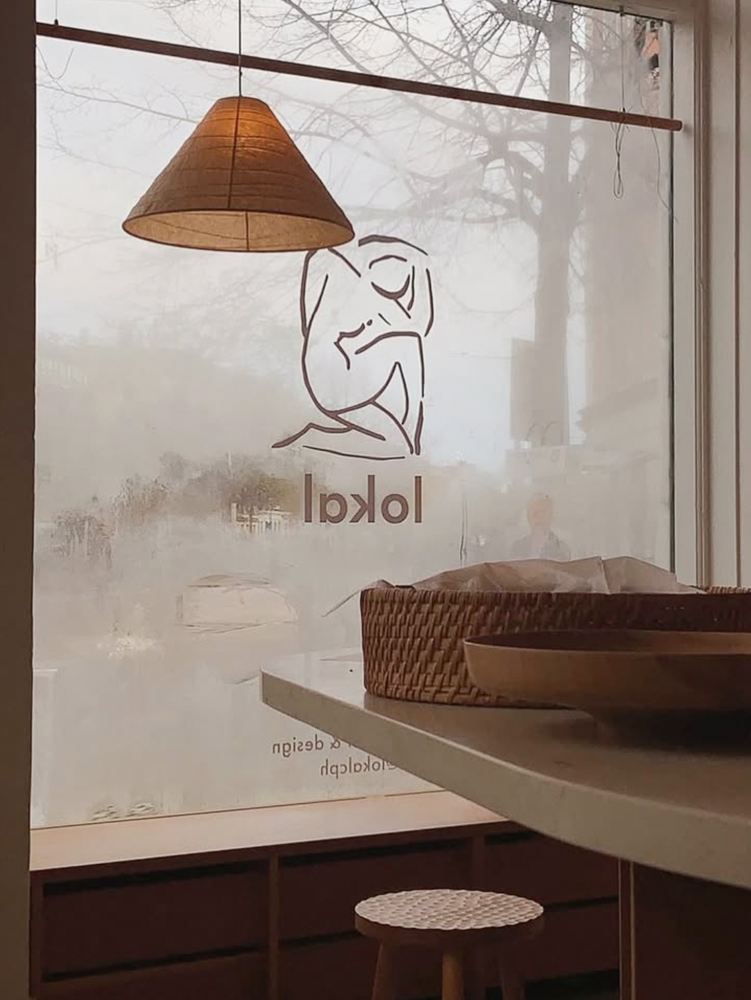

Riviera
Café · Nansensgade
A recommended Copenhagen stop from The Dog Friendly Guide collection.
City Edition · Copenhagen
Our curated selection of beautiful dog-friendly places in Copenhagen.
Save on Google Maps2 recommendations
Café · Nansensgade
A recommended Copenhagen stop from The Dog Friendly Guide collection.
Café · Vesterbro
A recommended Copenhagen stop from The Dog Friendly Guide collection.

